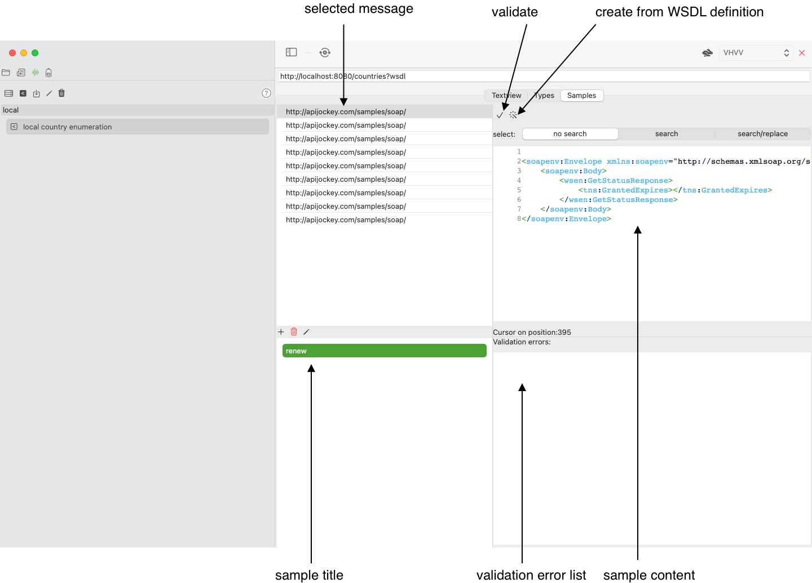

Servicedefinitions
the tab servicedefinitions holds information about - WSDL service definitions and - Manual servicedefinitions.
WSDL Service Definition
A WSDL contains information about SOAP Web services. When you work with SOAP Web services you you will need to know which operations and messages are available and what authentication is required.
As WSDL service definition includes information in three tabs - Textview contains the WSDL itself with its definitions of services, operations, messages, ports, bindings and schema type information - Types lists all namespace schema files with their contents that are referenced by the WSDL file according to import or include elements or separate XSD-files doing so. - Samples lists all messages and allows you to create and maintain sample requests or responses for use in requests or when mocking web service responses, which you may want to perform in a third party solution.
While the Textview and the Types tab are self-explaining, the Samples tab offers functionality that help you create requests by holding a list of predefined messages.
WSDL Service Definition Tab Samples

All WSDLs define services, ports, operations, messages and types. These define the data model of your requests and responses.
Types may be defined in the WSDL-file itself or be referenced in separate schema files (XSD-files) that need to be taken into account when loading the WSDL itself, in general following an import or include element. You would find these XSD files in the Types tab.
The tab holds a list of messages defined in the WSDL file. When you select a message, you can create samples with a sample title. Right to you list, you can edit your message. For requests this will be the corresponding request message.
If you don't want to start from scratch create from WSDL definition will read the WSDL information and help you getting started.
The Button validate will trigger assertion of the current sample content against the wsdl, in case errors these are displayed in the validation error list.
When you create a SOAP request, you will be prompted for the SOAP Operation that you want to test. In case you have defined a Sample for the SOAP Operation Input message, these are listed side-by-side with the operation. Selecting on would copy the sample content in the request.
Manual Service Definition
When you want to work with HTTP Teststeps and configure different run environment servicedefinition information such as authentication and URLs you may create a manual service definition.
This service definition can be referenced in the tab Run Environment.